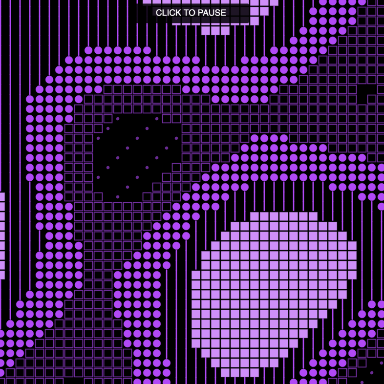
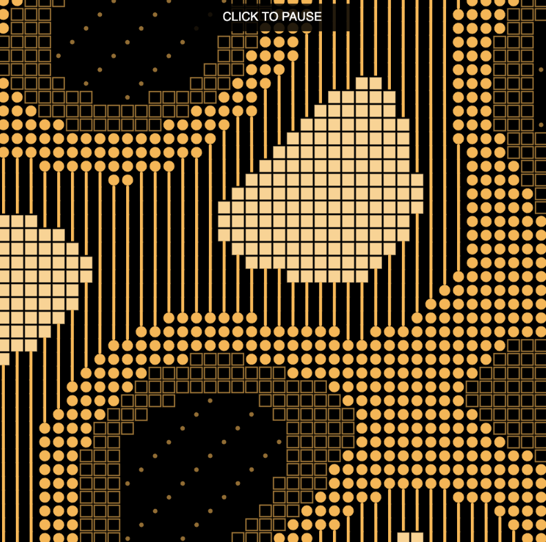
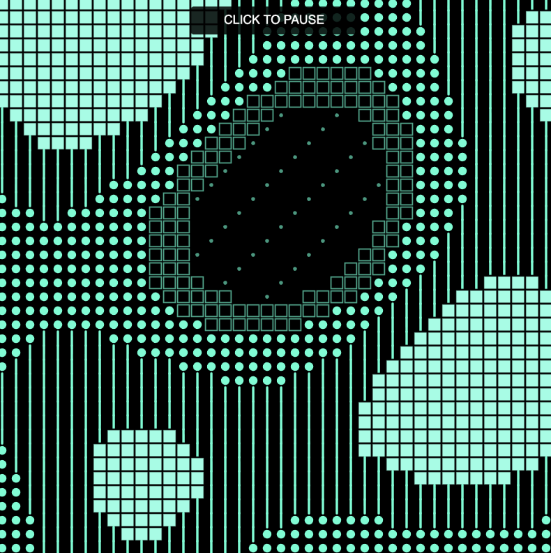

For my audio visualization, I wanted to create something more abstract and upbeat that could visually capture the rhythm and energy of music. I was inspired by generative art that uses repeated geometric shapes, grids, and patterns to create movement. From that I wanted to experiment with how a grid system could become more dynamic and fluid across the screen. I used a combination of squares, dots, and vertical lines to create patterns that continuously shift and form larger shapes as the music plays. I kept the background black so it can contrast with the brighter colors.
For my audio source, I chose Digital Blast (Glitch Minimal Dub Techno) by Musinova from Pixabay. I liked its electronic rhythm and especially the deep bass sounds that appear throughout the track. Using p5.Amplitude() and p5.FFT(), I analyzed the overall loudness and different frequency ranges of the music and mapped them to different visual properties. The amplitude controls the size of the shapes, the middle frequencies affect the movement and distortion of the grid, and the higher frequencies change the distribution of the patterns. I also wanted to make the deeper bass sounds more prominent, so I used the lower frequencies to trigger color changes in the main pattern. When these sounds become stronger, the purple shapes transition into other bright colors before gradually returning to purple. Sudden bass hits also trigger colorful squares that appear and fade away across the canvas.
Through these mappings, I wanted the visualization to reflect both the repetitive rhythm and the unexpected changes in the music. The grid provides a consistent structure, while the shifting patterns and colors make it feel less predictable. I chose smooth transitions for the movement and color changes because I wanted the visuals to flow with the music rather than feel disconnected from it. For the implementation, I referenced our class notes on sound analysis, particularly using p5.Amplitude() and p5.FFT(), along with concepts from previous weeks such as arrays, loops, conditional statements, map(), lerp(), and sin() and cos() for movement. I also referred to the p5.js sound reference to better understand how audio data can control visual elements. I used the LLM to help troubleshoot differences between versions of the p5.sound library, develop the frequency analysis and beat detection, and for calculations to draw the composition. I also used it to explore different ways of mapping the music to visual effects, then adjusted the patterns, colors, and sound responses based on what I wanted to emphasize in the music.


